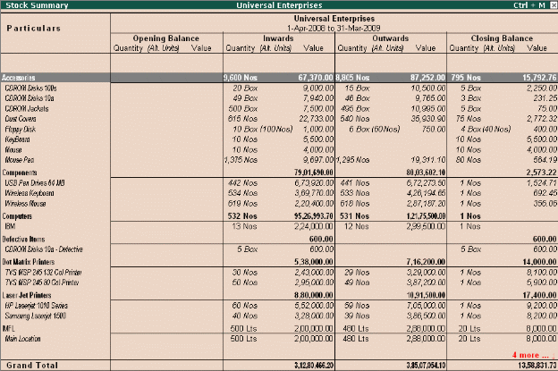

Flexible units of Measure
The instances of stock items being measured in different Units of Measure are common. In Tally.ERP 9 you can define multiple units as per your requirements. It is also possible that an item could be transacted in one or more units of measure, for e.g. Sugar is purchased in tons and sold in either kgs or packets.
Tally.ERP 9 allows creation of compound as well as alternate units for a stock item. You can define a Compound unit as a relation between of two simple Units, for e.g. create a compound unit namely, Ton of 100 kgs.
To create Units of Measure,
Go to Gateway of Tally > Inventory Info. > Units of Measure > Create
# Select Unit Type
# Specify Unit name
To activate and create Alternate Units,
Go to Gateway of Tally > Inventory Info. > Inventory Info > Stock Item > Create
# Press F12: Configure (Inventory Info.) and activate Use ALTERNATE UNITS for Stock Items
# Enter Alternate Units
To create Compound Units, create two simple units of measure (as mentioned earlier) and then
Go to Gateway of Tally > Inventory Info. > Units of Measure->Create.
# Select Unit Type as Compound
# Select First Unit and enter Conversion units
# Select the Second Unit
To view Reports in Alternative Units,
Go to Gateway of Tally > Stock Summary
# Press F12: Configure, set Show Opening balance, Goods Inwards, Goods Outwards and Closing Balance to Yes
# Set Show using Alternate Units to Yes
